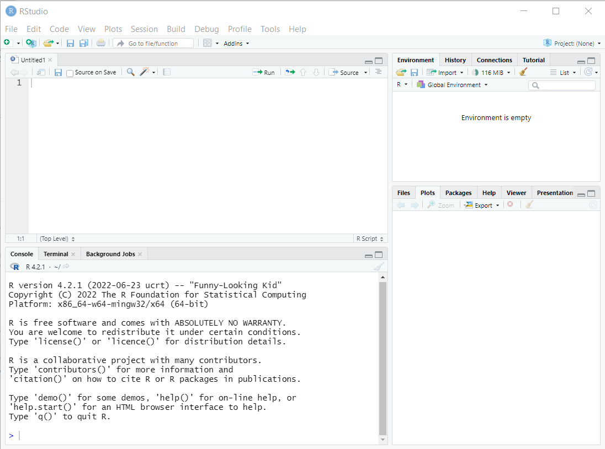
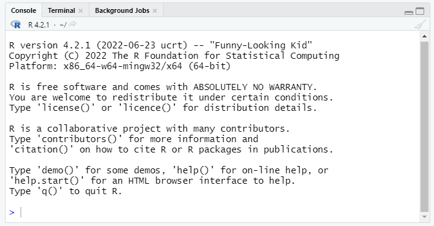
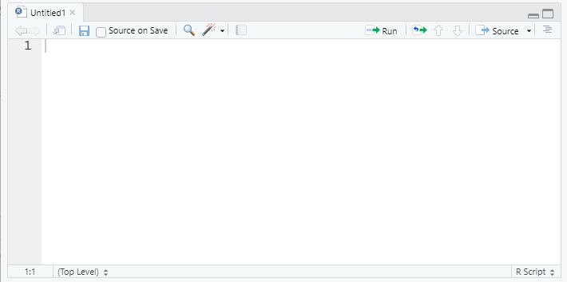
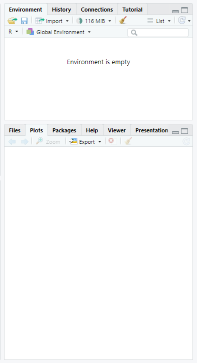

beginR: Introduction
Why R?
R is widely used in statistics and has become quite popular in the biomedical and social sciences over the last decade. R can be used as either a programming language (like Python or Java) or as a standard statistical package (like Stata, SAS, or SPSS).
R is open source and free to use for any purpose. This has clear advantages and a few disadvantages:
Advantages
- Free!
- Portable (Windows, macOS, Linux)
- Interactive visualization
- Reproducible reports
- Active user base
- Blogs, forums, StackOverflow, etc. provide many avenues of support
- Many new methods (e.g. lasso regression, Bayesian multilevel modeling, and deep learning) quickly appear as R libraries
Disadvantages
- No commercial support
- R is available free as is. If something doesn’t exist or doesn’t work the way you think it should you can wait for someone else to (hopefully) build it, or it’s up to you
- No commercial hotline for help
- Support and libraries from other users varies by popularity of method/area of study.
Learning objectives for the semester
R is a big tent that supports a variety of programming styles and tasks, so we can’t possibly cover all of it. We will focus instruction on using R for analyzing data. If you are interested in software development in R, you can use the unstructured time for help with that. We’ll also provide links to some great online resources for software development in R.
We are going to focus on the Tidyverse family of R packages for data analysis. The authors of the Tidyverse have also written a free ebook, R for Data Science. We will not follow this book exactly, but for each of our workshops we will announce the corresponding chapters from the book, so you can have an additional perspective and practice on what we are teaching.
This workshop does not aim to give a comprehensive introduction to all aspects of R.
We also hope to empower you to become a self-sufficient R user, so we’ll be showing you examples of how to troubleshoot and debug R code. Those of us who have used R regularly for years still troubleshoot, refer to documentation, and google error codes all the time!
Learning Objectives for Today
This introductory workshop aims to cover:
- Install R and R Studio if you haven’t already
- Briefly familiarize or re-familiarize you with some of the most important elements of R
- RStudio interface
- Tidyverse library
- Data types
- Reproducible workflow
- importing data
- scripts
- projects
- saving output
- R for Data Science Chapters 1,2,4,6
Setup: R, R Studio
Installation
| Mac Installation | PC Installation |
|---|---|
Check your version number and make sure to download the correct version of R/RStudio. Download R from https://cran.r-project.org/bin/macosx/
|
Download R from https://cran.r-project.org/bin/windows/base/
|
Download R Studio at https://posit.co/download/rstudio-desktop/#download
|
Download R Studio at https://posit.co/download/rstudio-desktop/#download
|
Optional:
|
Optional:
|
R Studio vs. Positron
Posit, the company that makes R Studio, has created another integrated development environment (IDE) called Positron. Positron is built on VS Code, so if you have software development experience with VS Code, Positron may provide a more familiar user experience. If you have never used VS Code, have no fear! For these workshops, we are focusing on R Studio.
R Studio orientation

Panes
R Studio shows four panes by default. The two most important for writing, testing, and executing R code are the console and the script editor.
Console (bottom left)

The console pane allows immediate execution of R code. This pane can be used to experiment with new functions and execute one-off commands, like printing sample data or exploratory plots.
Type next to the > symbol, then hit Enter to execute.
Script Editor (top left)

In contrast, code typed into the script editor pane does not automatically execute. The script editor provides a way to save the essential code for your analysis or project so it can be re-used or referred to for replication in the future. The editor also allows us to save, search, replace, etc. within an R ‘script.’ (This is much like the difference between using a Stata .do file and the main Stata window!)
The script should contain every necessary step in a data analysis; you should aim to be able to open and run a script in a new R session without relying on anything you’ve only run in the console. In contrast, the console is a great place to test code or run one-off checks of the data.
R Studio provides a few convenient ways to send code from the script editor to be executed in the console pane.
- The Run button at the top right of the script editor pane provides several options.
- One of the most useful is the CTRL+Enter (PC) or CMD+Enter (Mac) shortcut to execute whichever lines are currenly selected in the script editor
- If no complete lines are selected, this will execute the line where the cursor is placed.
Other Panes

The other panes provided in R Studio are provided to make some coding tasks easier. Some users hide these windows as they are less essential to writing code. Some of the most useful panes are:
Environment (top): Lists all objects and datasets defined in your current R session.
Plots (bottom): Displays plots generated by R code.
Help (bottom): Displays html format help files for R packages and functions
Files (bottom): Lists files in the current working directory (more on this later!)
Loading the tidyverse
First, we need to load the tidyverse package. (Note, the terms package and library are interchangeable). You can install the library using the install.packages command or through the Packages tab on the lower right pane. Once you have it installed, you can load this library with the following code:
#install.packages("tidyverse", dependencies=TRUE)
library(tidyverse)── Attaching core tidyverse packages ──────────────────────── tidyverse 2.0.0 ──
✔ dplyr 1.2.0 ✔ readr 2.1.5
✔ forcats 1.0.0 ✔ stringr 1.5.1
✔ ggplot2 4.0.3 ✔ tibble 3.2.1
✔ lubridate 1.9.4 ✔ tidyr 1.3.1
✔ purrr 1.0.4
── Conflicts ────────────────────────────────────────── tidyverse_conflicts() ──
✖ dplyr::filter() masks stats::filter()
✖ dplyr::lag() masks stats::lag()
ℹ Use the conflicted package (<http://conflicted.r-lib.org/>) to force all conflicts to become errorsYou only have to install a package once, but you’ll need to load it each time you start a new R session.
Note: install.packages("tidyverse", dependencies=TRUE) is a great candidate to run in the console window, since you only need to run it once and it won’t be needed again. library(tidyverse) has to be run before using the tidyverse package, so it is probably necessary in your script!
What is reproducibility?
Scientific reproducibility - if you repeat my experiment, you will get the same results as me. This is beyond the scope of this workshop (see here for an overview)
Computational reproducibility - if I give you my data and code, you will get the same results as me. We’ll focus on the basics of computational reproducibility today.
Why does computational reproducibility matter?
- Your most important collaborator is you six months from now.
- We want Science (with a capital S) to be self-correcting. Since you’re human, you will make mistakes, so you want to make it as easy as possible for others to catch your errors (see the Reinhart and Rogoff Excel error and the Guinea worm wars for recent examples)
Your script is real, your environment is not
For your results to be reproducible, every step you take to manipulate the data should be explicitly documented in an R script.
This also means that you want to make sure that your results don’t have hidden/implicit dependencies in your R environment. There are two steps you can to take to prevent this.
- Reconfigure RStudio not to save your workspace between sessions. (Tools > Global Options > General)

dio-workspace.png)
- Restart RStudio from scratch and rerun the current script often.
- Cmd/Ctrl + Shift + F10 to restart RStudio
- Cmd/Ctrl + Shift + S to rerun the current script
Note: If you have learned R in the past, you may have been taught to use the expression rm(list = ls()) to clear your R environment. This will not actually return R to a blank slate! Although this code will delete objects in your R environment, it won’t reset global settings that have been changed. It is always safer and more effective to restart RStudio.
RStudio Projects
You can use the R function setwd() to point to locations of data files, but this isn’t ideal for reproducible research. When you switch between computers, it is likely that the absolute directory path will change, so you will have to modify the path for each computer. Users of your code will not have the same absolute directory path that you have, so they will have to modify the path in the setwd() function before they can use your code.
RStudio Projects provide a way to bundle together data, code, and other files together so that you can refer to files with relative directory paths, which creates a much more portable structure that won’t need to be modified between computers or users.
Setup and Data Import
Data and other downloads
Configuration
- File > New Project > New Directory > New Project
- Create a new subdirectory called “data” inside this project to store the data.
- Copy the Airbnb data (listings.csv) into this data directory
- Create a new R Script for the data analysis in this project. (File > New File > R Script)
Import the data
We’ll begin by loading the tidyverse library. This library includes readr, which we will use to read in our data file (for more details on readr, see Chapter 11 of the text).
RStudio has a useful keyboard shortcut for <- (the assignment operator): Alt + -, i.e. press the Alt key and the minus/hyphen key at the same time.
# Purpose: Exploratory data analysis of airbnb data
# Author: Nuvan Rathnayaka
# Date: September 2018
# Setup -----------------------------------------------------------
library(tidyverse)
# Data Import ------------------------------------------------------
airbnb_dc <- read_csv("data/listings.csv") #Since I'm using an RStudio project, I only have to specify the path relative to the top directoryRows: 7788 Columns: 14
── Column specification ────────────────────────────────────────────────────────
Delimiter: ","
chr (4): name, property_type, room_type, cancellation_policy
dbl (10): id, accommodates, bathrooms, bedrooms, price, extra_people, minimu...
ℹ Use `spec()` to retrieve the full column specification for this data.
ℹ Specify the column types or set `show_col_types = FALSE` to quiet this message.#If you have problems running the read_csv above, the following code should also work
#(Download data directly from the internet)
#airbnb_dc <- read_csv(url("https://unc-libraries-data.github.io/beginR/week2_Workflow/data/listings.csv"))Headers and code folding
As you start developing more complicated analyses, a single R script can get rather long. Breaking up the code into sections using comments makes it easier to read and navigate. If you create a line of code formatted like this:
# section name ----
The RStudio interface recognizes that as a code chunk and lets you hide/unhide that section. You can nest these code chunks by adding additional # signs like this:
# section name ----
## subsection name ----
Coding conventions
Something that I’ve glossed over is that you have options for how to name objects. For example, we called our imported data airbnb_dc, but we could have called it airbnbListings, or airbnb.listings
Having a consistent way you name objects and functions helps you remember what things are called. It’s especially useful when you’re working with others to agree upon a coding convention. It doesn’t particularly matter which one you choose, as long as you choose a convention and stick to it.
Example style guide: http://style.tidyverse.org/index.html
Basic Data Exploration
What is airbnb_dc? library()? read_csv()?
Unlike other popular statistical software, R is an object oriented programming language, similar to other popular languages such as Java, Python, Ruby, or C++.
airbnb_dc is an object. Specifically, it’s a type of object called a data frame. It is designed to represent two-dimensional data, much like a spreadsheet. There are other kinds of R objects that are used to represent data, such as the vector that is used to represent one-dimensional columns of data, but the data frame is the one we’ll most often be using in the our analyses.
Read more about data structures here
library() and read_csv()` are functions. We’ll learn more about these as we go along, but for now, it may be useful to think of objects as nouns and functions as verbs.
Useful data frame functions
The dim() function will print the dimensions (rows x columns) of your data frame.
head() will print the first few rows of your data frame. glimpse() transposes the data.frame for easier printing of similar output.
(Note: str() is a general purpose function similar to glimpse that will display the structure of an object, often including extra information. This can be useful for debugging.)
# Some useful functions ----------------------------------------
dim(airbnb_dc)[1] 7788 14head(airbnb_dc)# A tibble: 6 × 14
id name property_type room_type accommodates bathrooms bedrooms price
<dbl> <chr> <chr> <chr> <dbl> <dbl> <dbl> <dbl>
1 4873463 Cozy P… Apartment Entire h… 3 1 0 95
2 16736650 Large,… Apartment Entire h… 2 1 0 200
3 14999877 Newly … Apartment Entire h… 2 1 1 100
4 5955860 Spacio… Apartment Entire h… 3 1 1 129
5 15655208 Luxury… Townhouse Entire h… 4 2.5 2 500
6 4022565 Dupont… Apartment Private … 2 2.5 1 110
# ℹ 6 more variables: extra_people <dbl>, minimum_nights <dbl>,
# number_of_reviews <dbl>, review_scores_rating <dbl>,
# cancellation_policy <chr>, reviews_per_month <dbl>glimpse(airbnb_dc)Rows: 7,788
Columns: 14
$ id <dbl> 4873463, 16736650, 14999877, 5955860, 15655208, 4…
$ name <chr> "Cozy Pied-a-Terre, the Heart of DC", "Large, wel…
$ property_type <chr> "Apartment", "Apartment", "Apartment", "Apartment…
$ room_type <chr> "Entire home/apt", "Entire home/apt", "Entire hom…
$ accommodates <dbl> 3, 2, 2, 3, 4, 2, 3, 2, 4, 2, 4, 3, 2, 2, 2, 2, 2…
$ bathrooms <dbl> 1.0, 1.0, 1.0, 1.0, 2.5, 2.5, 1.0, 1.0, 1.0, 1.0,…
$ bedrooms <dbl> 0, 0, 1, 1, 2, 1, 1, 1, 2, 1, 2, 1, 0, 0, 1, 0, 1…
$ price <dbl> 95, 200, 100, 129, 500, 110, 225, 79, 172, 110, 1…
$ extra_people <dbl> 10, 0, 0, 50, 0, 15, 20, 0, 0, 10, 0, 0, 0, 0, 20…
$ minimum_nights <dbl> 2, 1, 27, 2, 2, 6, 3, 3, 1, 1, 2, 1, 2, 3, 7, 2, …
$ number_of_reviews <dbl> 29, 2, 0, 79, 1, 7, 3, 4, 24, 4, 0, 0, 23, 3, 6, …
$ review_scores_rating <dbl> 94, 90, NA, 85, 100, 97, 100, 89, 88, 100, NA, NA…
$ cancellation_policy <chr> "flexible", "flexible", "moderate", "flexible", "…
$ reviews_per_month <dbl> 1.01, 0.55, NA, 3.13, 1.00, 0.23, 0.82, 0.09, 0.4…Asking questions of your data
In the next few weeks we will provide more detailed instruction on the tidyverse tools for analyzing data. Here are a few examples of the kinds of things you can do.
Exploring categorical data
We can use the table() function to view counts/frequencies of categorical variables.
# Categorical Variables ----------------------------------------
table(airbnb_dc$property_type)
Apartment Bed & Breakfast Boat Boutique hotel
4191 73 3 11
Bungalow Cabin Castle Condominium
4 1 1 420
Dorm Guest suite Guesthouse Hostel
25 11 17 2
House In-law Loft Other
2480 12 33 31
Serviced apartment Timeshare Townhouse Train
1 1 468 1
Treehouse Villa
1 1 If you want to do a more complicated computation, you can also nest functions within each other. Here, let’s generate a contingency table using table(), then sort it by count using sort().
sort(table(airbnb_dc$property_type), decreasing=TRUE)
Apartment House Townhouse Condominium
4191 2480 468 420
Bed & Breakfast Loft Other Dorm
73 33 31 25
Guesthouse In-law Boutique hotel Guest suite
17 12 11 11
Bungalow Boat Hostel Cabin
4 3 2 1
Castle Serviced apartment Timeshare Train
1 1 1 1
Treehouse Villa
1 1 That works, but it’s a little hard to read. We could try breaking this into two steps and storing our intermediate output.
property_type_table <- table(airbnb_dc$property_type)
sort(property_type_table, decreasing = TRUE)
Apartment House Townhouse Condominium
4191 2480 468 420
Bed & Breakfast Loft Other Dorm
73 33 31 25
Guesthouse In-law Boutique hotel Guest suite
17 12 11 11
Bungalow Boat Hostel Cabin
4 3 2 1
Castle Serviced apartment Timeshare Train
1 1 1 1
Treehouse Villa
1 1 This works ok, but it does mean we’re creating an additional object, property_type_table, and we could end up with lots of objects that are trivially different from each other if we do this too often. In the next lesson, we’ll introduce the pipe operator, which makes this kind of nested computation easier to read.
Exploring continuous data
R has built-in functions to compute the mean, standard deviation, min, median, and max.
# Continuous Variables ----------------------------------------
mean(airbnb_dc$price)[1] 247.1451sd(airbnb_dc$price)[1] 385.8856min(airbnb_dc$price)[1] 0median(airbnb_dc$price)[1] 125max(airbnb_dc$price)[1] 6000Missing data
There are some missing values in the review_scores_rating and reviews_per_month columns, even within the first six rows. We can check which values of review_scores_rating are NA with is.na()
# Continuous Variables ----------------------------------------
sum(is.na(airbnb_dc$review_scores_rating)) #summing a logical (TRUE/FALSE) vector counts the number of TRUE values[1] 2207We can check all of our columns using R’s colSums to sum all of the columns at the same time.
colSums(is.na(airbnb_dc)) id name property_type
0 5 0
room_type accommodates bathrooms
0 0 14
bedrooms price extra_people
14 0 0
minimum_nights number_of_reviews review_scores_rating
0 0 2207
cancellation_policy reviews_per_month
0 2128 Handling missing data is an advanced topic that is a bit beyond the scope of this lesson. There is no good way to handle missing data, there are only bad and less bad ways.
One of the bad ways to handle missing data is what’s known as a complete case analysis. In this kind of analysis, you only keep observations (rows) where you have observed (non-missing) values for ALL columns.
R has built-in functions to facilitate this:
complete.casesreturns a logical vector indicating whether or not an entire row of a dataset contains any missing values. You can also use this function on a subset of columns to determine if only those columns are completena.omitreturns a new dataframe with only the complete cases (as identified above)
For most R functions, the default is to return NA is any of the values are NA:
mean(airbnb_dc$review_scores_rating)[1] NASome functions, like the linear regression function lm(), perform a complete-case analysis automatically:
lm(review_scores_rating~price, data=airbnb_dc)
Call:
lm(formula = review_scores_rating ~ price, data = airbnb_dc)
Coefficients:
(Intercept) price
94.230536 0.003191 When a function complains about missing values and fails, there’s usually an argument that can be modified to change it to a complete-case analysis:
mean(airbnb_dc$review_scores_rating, na.rm=TRUE)[1] 94.72406Saving datasets
Suppose, we’ve done some computation, and we want to save our modified dataframe. We can use write_csv() to save our dataset as comma separated values file.
airbnb_dc$price_gt_500 <- (airbnb_dc$price > 500)
write_csv(airbnb_dc, "data/modified_airbnb.csv")Exercises
- What are the different types of cancellation policies offered at Airbnb?
- What is the most common and least common cancellation policy?
- What percent of Airbnb property types are houses? Hint: To find what percent of X is Y, use this formula: Y/X * 100
- How many listings get a review rating below 50?
- Try installing the visdat library, and explore different ways to visualize missing data.
Resources
Beginners
Review today’s material by reading R for Data Science Chapters 1,2,4,6. Try the exercises in these chapters for additional practice.
Next week, we’ll be covering the material in Chapter 3 if you’d like to look ahead!
Reproducibility
Concise guide to basic computational reproducibility
Eight things you can do to make your open science more understandable
A detailed guide to reproducible workflows in collaborative settings
Other Resources
Quick References
Useful R Packages:
Advanced R Books:
Statistical Modeling Textbooks:
An Introduction to Statistical Learning
Feedback
You’ll receive an automated email with feedback information after the workshop!
Comments
In R, the # symbol indicates the beginning of a comment. Everything to the right of that is ignored by R, so you can write plain text to document what you’re doing, organize your code, and explain any tricky or unusual steps.